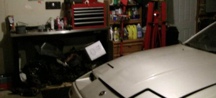
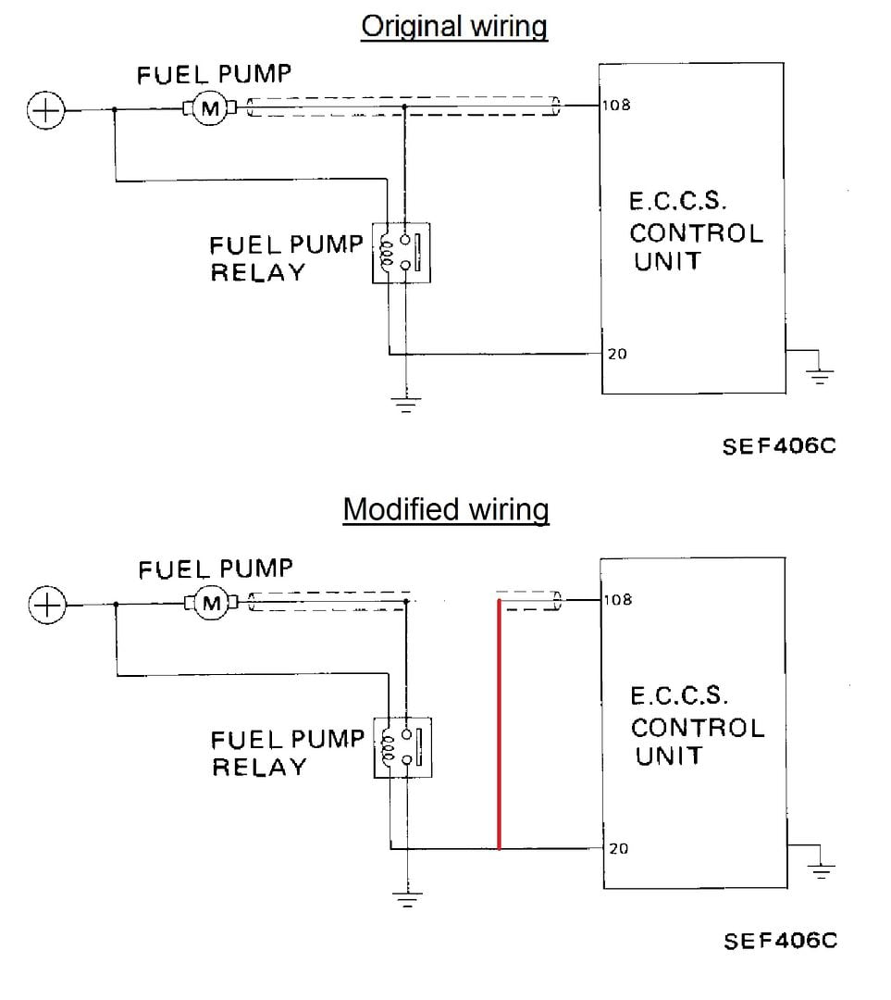
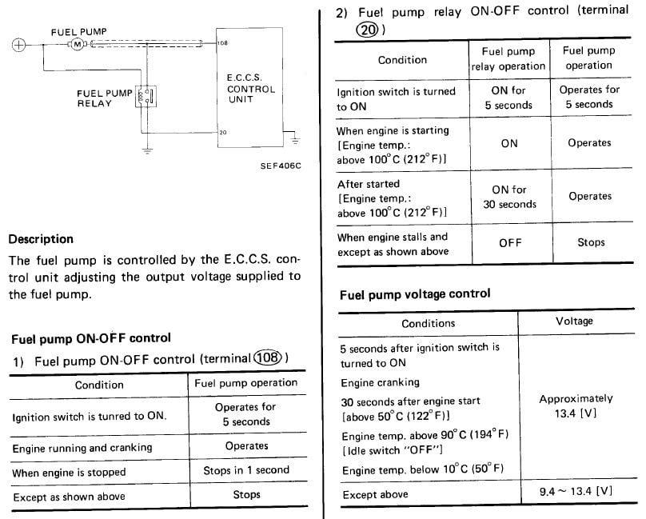

-
So what is the correct way to do it.. I just read through all 6 pages and now I'm confused…Jared86NA;326074 wrote: I know this thread is really old, but it took me far too long today to figure out how to wire my pump. Yellow wire from Pin 20 (only!) to blue fuel pump relay coil negative. New wire +12V from battery to both blue relay coil positive and relay switch positive. New wire from relay switch negative to fuel pump positive (blue/white wire on car-side of fuel pump harness connector). New wire from fuel pump negative to body ground. Third wire on pump not used.
Initially had Pins 108 and 20 to the coil negative, but this caused my pump to run whenever the battery was connected. It had been a long evening at this point and I suppose it's possible I had the wrong wire. With only wire 20 powering the coil, the fuel pump primes 5 sec, shuts off, and runs when the engine runs. Went for a test drive from stone cold to running temp and the pump worked as it should. Hope this helps someone.1985 300ZX Turbo- Wrecked R.I.P.
-Stock
04/87 300zx Turbo GLL- Project Car/Daily
-Built Heads, Cams, HX35....etc.
2007 Dodge Ram 1500 SLT Quad Cab w/Hemi- SOLD
-Banks Full 3in Exhaust, Edge Evolution Tuner Chip, K&N Cold Air Intake, BBK 90mm Throttle Body, Full JL Audio Sound System(speakers, amps, subs) Pioneer Touch Screen Head Unit
2014 Chevy Cruze Lt RS- Daily
-Stock 1.4T Autotragic

-
Agreed ive done this mod on dsm's but it more or less involved running a fused 10ga wire from the battery to the fuse and then from the fuse to the power side of the pump and using the original pump power supply to switch the relay. Do you have to worry about hurting the system when you splice 108 and 20 together? and do you need to run a fused wire direct from the battery or not? It seems some people are and others aren't. Understand the concept but everyone seems to be disagreeing so much. -
From what I gathered from this, you can simply use the current fuel pump power and ground wires as the relay control circuit, then run a separate power and ground from the battery to the pump through the relay load circuit to provide the constant 12v feed. No need to mess with the ECU or the existing fuel pump relay. Could be wrong though, I'm going to try it that way when I get home from vacation. -
My fuel pump is a lot louder now after this mod.
I presume this is normal as it's working as hard as it can at all times. -
I know a lot of people have been asking for a diagram/picture to help them do this mod. I know it would have helped me because I went through this thread a few times and tried multiple ways on how to wire this thing up before I finally got it right. So there are some suggestions in here that do not work or make the pump run with the ignition off. So here is a picture and what I did to make this work.
http://i154.photobucket.com/albums/s…ps93b30527.jpg
Red wire - Terminal 85 - Pump +
Black wire - Terminal 30 - Body -
White wire - Terminal 86 - From ECCS -
Green wire - Terminal 87 - To fuel pump -
Terminal 87a is not used.
Hope this helps. -
Question on this confusing thread
I realize this is an old thread, but doesn't look anyone's been here in a couple years. My question involves the need to run a new dedicated relay, hot wire and/or ground wire for the pump.
Since there is already a dedicated ground when the prime signal (pin 20) activates the relay, won't the same ground be sufficient for normal operation? I see others appear to be running new hot wires through the relay (as shown by MY1PATH) or a new dedicated relay and hot/ground wires (as shown by JeffSly).
My FSM diagram for the fuel power circuit is essentially the same as shown in the post by Careless… but a little less detailed (different year FSM I assume). I've drawn a diagram of what I'm proposing should work, but I need to know if this will be a problem. The connection from the fuel pump to pin 108 is cut, and pin 108 and pin 20 are jumpered. This should always give the coil a path to ground.

The diagram is part of a section that describes the operation of the pump, and I'm a little concerned that the relay will now be energized 100% of the time. Will this cause the coil to burn out? It looks like the relay is normally only powered for about 30 seconds after the engine starts. Don't see the need to trigger a second separate relay unless one relay can't handle the amps for a sustained duration, or if the dedicated ground used for priming is under-sized for full operational amps.

Has anyone done it the way I've shown, without a second relay?'86 NA - original owner (1986-93) and final owner (2005-present)
My build thread: http://z31performance.com/showthread…-Got-mine-back
-
I'm going to bump this because I just want to know if the ECU needs to see the fuel pump at all? I'm thinking about simply wiring the fuel pump to a toggle (because race car).________________
1987 Chumpcar -
ECU is blind to what that ground wire does… no feedback from the pump. Believe original intent was to vary voltage to the pump, but the direct-feed arrangement shown above eliminates that. The ECU has relatively few inputs… air flow, crank angle, CHT being among the more useful. I suspect you'd be fine just direct power to the fuel pump… as long as you remember to flip that toggle off when you finish racing…'86 NA - original owner (1986-93) and final owner (2005-present)
My build thread: http://z31performance.com/showthread…-Got-mine-back
-
Cool, that's what I figured, but wanted to see if anyone knew for certain. Thanks for the reply!
After I posted I was looking at the diagram and thought if it did need to see it, I could leave the relay in place and just hard wire the pump. The ECU would still activate the relay, but it wouldn't do anything. But I'm for simplicity and if its not needed it gets pulled, wiring and all.
Whole car is controlled by the master kill, and even if I forget to turn it off I'm pretty sure the external pump will be loud enough so that forgetting it will be unlikely, lol.________________
1987 Chumpcar

{kind=link}
Copyright © 2006–. All rights reserved. Privacy Policy